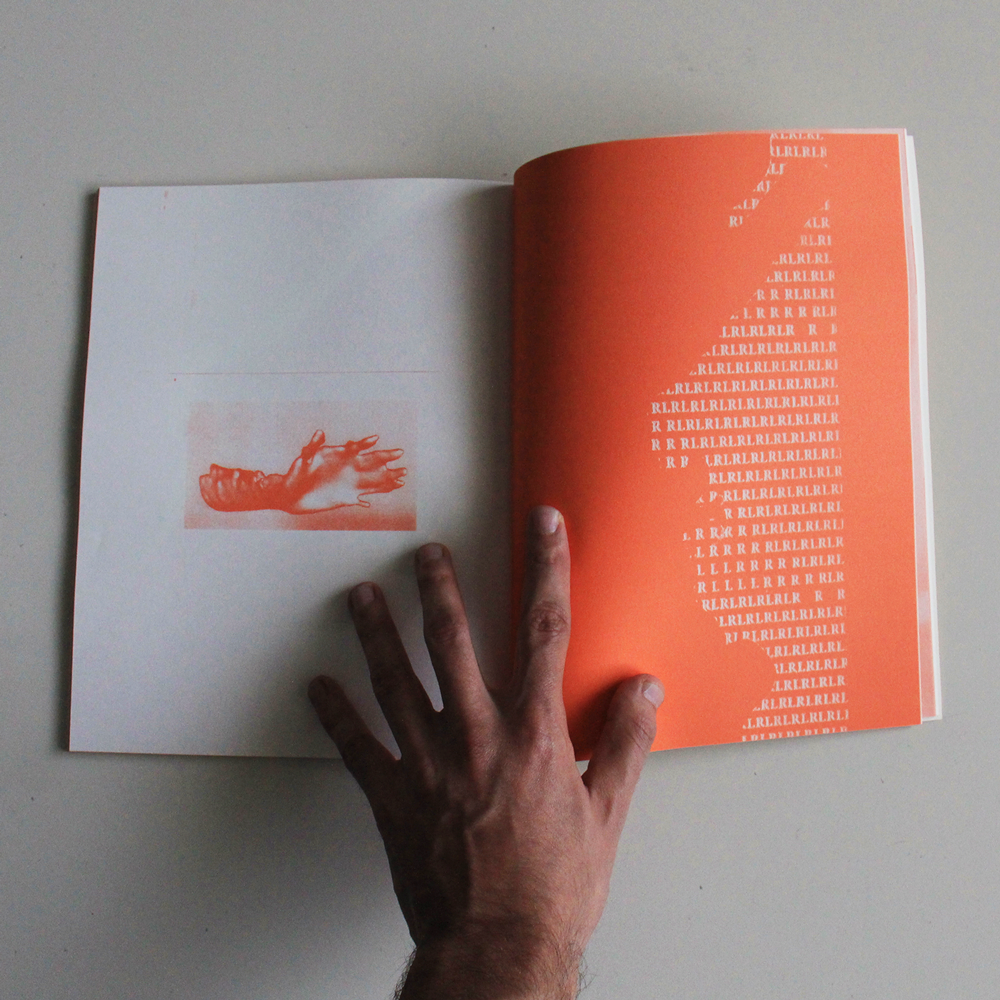
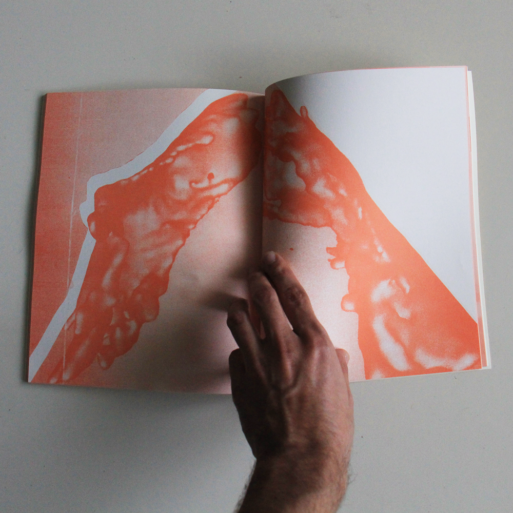
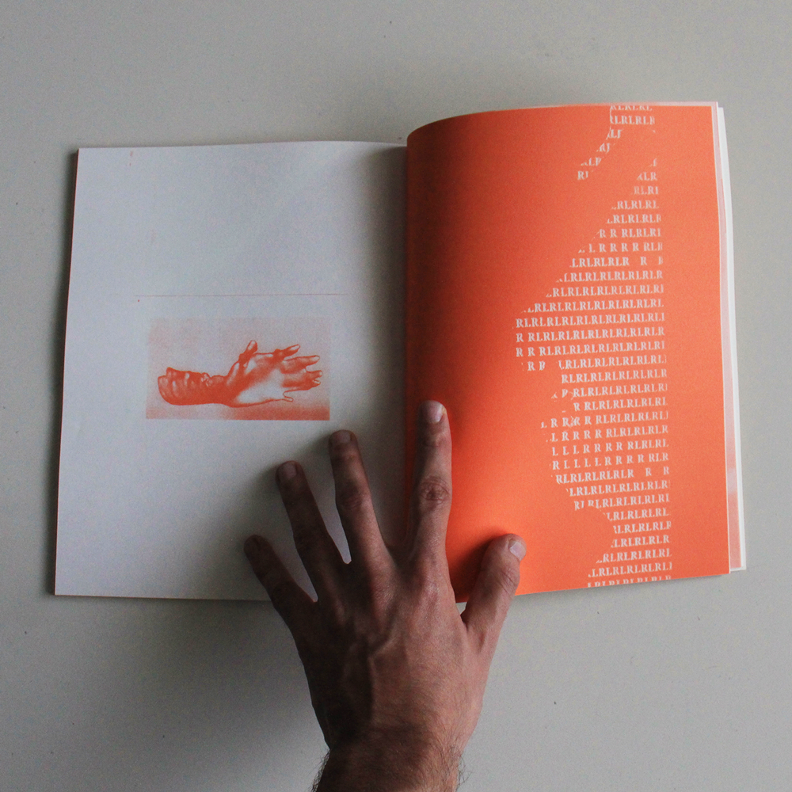
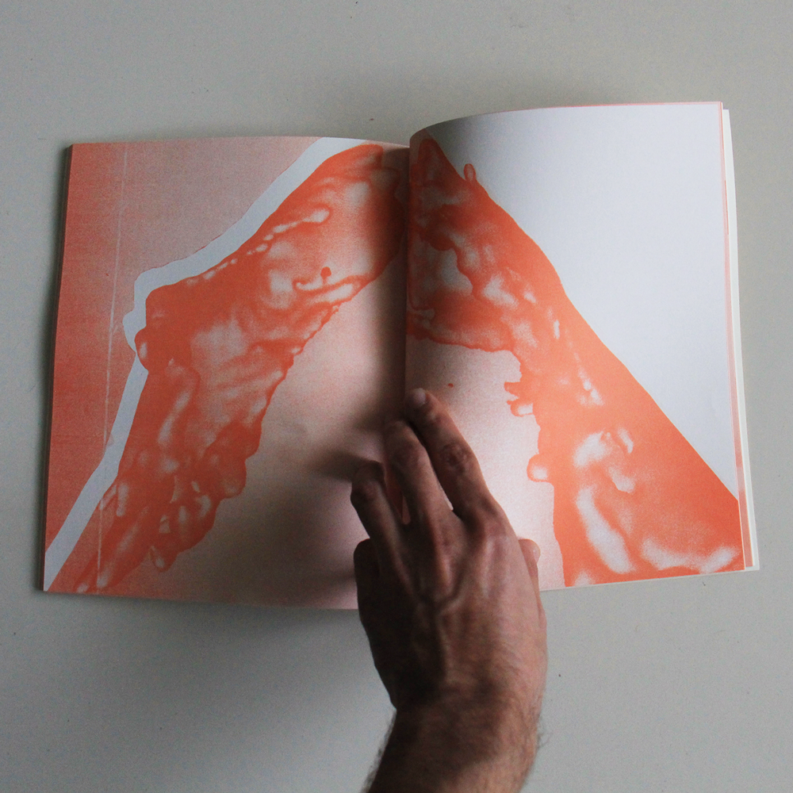
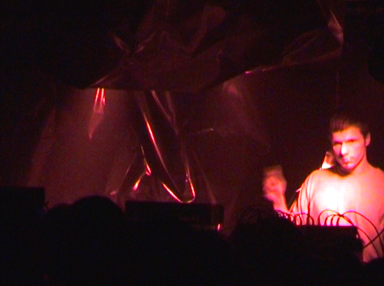
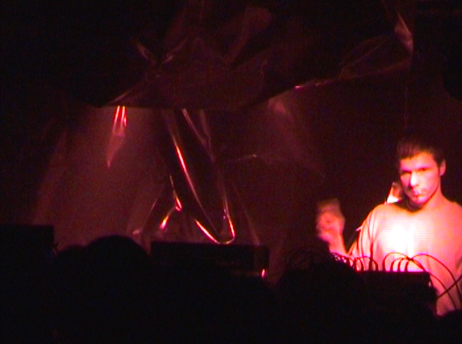

Marcelo Reis é artista licenciado em Cinema e Audiovisual pela ESAP e com uma Pós-Graduação em Artes Cinemáticas pela Escola das Artes da UCP. Trabalha regularmente com a galeria RAMPA e com a artista plástica Mariana Vilanova, dando apoio técnico e desenvolvendo soluções audiovisuais e de programação. É produtor musical sobre o nome de Wushta e é fundador da OLEC, plataforma que visa criar um ambiente de partilha dentro da música eletrónica na cidade do Porto. A prática artística de Marcelo baseia-se na exploração da transmissão, tradução e adulteração do sinal entre diferentes meios de forma a que a mensagem se transforme consoante a viagem da mesma.
Death Upon my Thought
RAMPA, Abril de 2021 - Exposição Colectiva no lançamento da Dose #6
Escultura em cimento com sementes de abacate suspensa com cabo de aço.


Binary Rhythm
Porto, Outubro de 2020 - Dose #5
Imagens desenvolvidas para a 5ª edição da revista Dose. A partir de um scan tridimensional das mãos, Marcelo explora a importância que das mesmas na sua criação artística. O seu primeiro ritmo a estudar percurssão, aos 9 anos, foi repetido durante todas as aulas até parar de estudar música aos 17, tornando-se um ritmo que fez parte do desenvolvimento cognitivo representado aqui com as letras R e L.
 



Wushta live at Mera Transmission
Porto, Junho de 2020
Concerto ao vivo para um stream da Mera Label: Mera Transmission. Os visuais foram desenvolvidos em Processing com o uso da técnica de Slit Scan e Luma Key.
“To be devoid of meaning is not identical to being lifeless”
Escola das Artes, Julho 2019 - Trabalho final da Pós-Graduação em Artes Cinemáticas
Este trabalho é resultado de uma reflexão acerca das diferentes perspectivas sensoriais que uma escultura pode ter. As duas esculturas feitas de zinco estão presentes na sala mas só podem ser percecionadas através da luz reflectida a partir da lanterna mágica construída para o objecto e pelo som que é emitido através da sua textura. O movimento dos dois obejctos é o que nos permite perceber a sua forma. Pode ser a luz reflectida menos real do que as esculturas, ou estas deixam de o ser?
A presença do objecto na sala faz com que não perca a sua Aura, ao contrário de uma projeção de vídeo do mesmo objecto? Todos os elementos fazem parte de um dispositivo/máquina de percepção, que mesmo sem qualquer significado mais profundo, nós humanos vamos sempre tentar atribuir um.
Sound Scan
Escola das Artes, Julho 2019 - Performance
Perfomance feita na Escola das Artes durante a inauguração da exposição Film Works. A imagem projectada é feita através da interpretação do som num osciloscópio que é capaz de representar dois eixos, x e y. Tendo dois inputs de som diferentes, a imagem torna-se uma forma que está em constante mudança. Quando os sons partilham são perto de harmónicos somos capazes de ver formas, quando são ruído não há forma mas sim uma mancha criada por diversas linhas.
A noção de tempo é dada através do Slit Scan feito à imagem do osciloscópio, que resulta numa imagem sintetizada onde um padrão é dificil de encontrar. O som não orgânico dos sintetizadores é interpretado num meio analógico que nos dá variáveis que não permitem a criação de um padrão visual claro.
Wushta
2014 - Presente
Projecto musical a solo de Marcelo Reis. Já colaborou com Dust Devices, Amaro Próximo e na Patches, conjunto de produtores de música eletrónica no Porto.
bandcamp soundcloud Apart 1 - videoclipGuerrilla Girl Shout-Out! Arquivo gráfico de Alice Neel
Curadoria por Melissa Rodrigues, Rebecca Moradalizadeh, Susana Gaudêncio e Vera Carmo
RAMPA, Junho de 2022
Montagem e apoio audiovisual na exposição da RAMPA que conta com uma seleção de objectos gráficos que fazem parte do arquivo pessoal de Alice Neel, uma das artistas-ativistas fundadoras do coletivo norte-americano, anónimo e feminista Guerrilla Girls. Programação em Pure Data e montagem de 4 sons em sincronia nas colunas de carro penduradas na parede.
visitarEvoking a Simulated Past - Mariana Vilanova
Fundação Bienal de Cerveira, Abril de 2022 - Exposição Espaço/Programa, com curadoria de Luis Pinto Nunes e Miguel Carvalhais
GNRation, Junho de 2022
Peça de Mariana Vilanova desenvolvida no âmbito da dissertação do Mestrado em Multimedia da FEUP/FBAUP. Apresentada no GNRation e depois desenvolvida para um diptico na exposição Espaço/Programa na Bienal de Cerveira. Criação de sketch em processing onde a luminância de um vídeo afecta a posição no eixo horizontal e vertical de um segundo vídeo.

Before and After Us - Mariana Vilanova
RAMPA, Janeiro de 2022
Peça de Mariana Vilanova criada para o ciclo de exposições da RAMPA "Future Past Imaginaries" focada no cosmismo russo. Direção de fotografia na curta metragem presente na sala principal e criação de banda sonora para a sala mais pequena da galeria. Apoio na produção e montagem da exposição.
Trabalho Nenhum. Ruína e Paisagem Sonora no Porto Pós-Industrial. - coletivo Gmurda
RAMPA, Junho de 2021
Montagem e apoio audiovisual na exposição da RAMPA do colectivo Gmurda. Sicronia de três projeções de vídeo com 3 Raspberry Pi's, e instalação de quatro canais de som no centro da sala.
visitarA Garden at Night - Tiago Madaleno
RAMPA, Outubro de 2020
Montagem e apoio audiovisual na exposição de Tiago Madaleno na RAMPA - A Garden at Night. Sincronia de vídeo com as luzes do espaço com o uso de um Arduino Uno e um LDR.
visitarAcrílico
CiRAC, Maio de 2021
Cenografia criada em colaboração com Andrea Graf para a peça de teatro Acrílico, com Catarina Santos e Tiago Regueiras. 8 televisões CRT síncronas e 3 Raspberry Pi's que tomaram o papel do maquinista que é omnipresente numa peça passada num eleveador que não anda.
Room for Uplifting Purposes
RAMPA, Janeiro de 2020 - Ácida: CALL NOW 2020, em colaboração com Mariana Vilanova
Instalação criada em colaboração com Mariana Vilanova para o evento CALL 2020 organizado pela Ácida, com DJ set de Chico Ferrão, Rufia, Silvestre, Rattus Gourmet e DJ Lynce. Vídeos de arquivo - Belfast Community TV de Tai-shi por David Hurley e The Mensendieck System for Total Back Health de Karl Knox Images. A imagem foi processada através de uma Panasonic WJ-AVE5. O chão estava coberto por um pano negro e com tapetes de Yoga espalhados pela sala.
Moist on Metal
V5, Dezembro de 2018 - Ácida: 161, em colaboração com Mariana Vilanova
Instalação criada em colaboração com Mariana Vilanova para o evento 161 organizado pela Ácida e pelos GAM, com DJ set dos GAM, Youth in Asia e um live set de Mattlack. Duas chapas de zinco polidas iluminadas por dois strobes assincronos.
 
